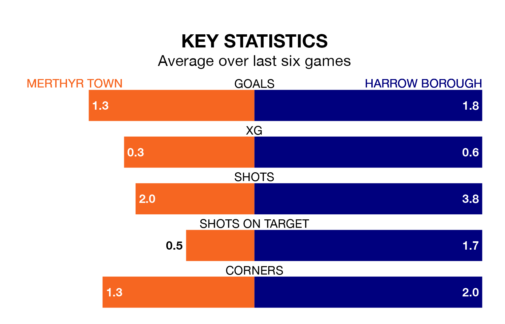

Merthyr Town are heavy favourites to keep all three points at home in Saturday's kick-off against Harrow Borough.
Merthyr, who sit sixth in the Southern League Premier South with 39 games played, are priced at 1.3 to seal victory.
Sitting 15 places and 28 points behind them in the table, Harrow are 7.5 to win with *Betting Company*, while the draw is at 5.0.
With 75 goals in 39 games so far this season, Merthyr are the league's third-highest scorers with 1.9 goals per game. And they are conceding fewer than average, letting in 55 goals at a rate of 1.4 per game.
Harrow, meanwhile, are below average scorers, with 1.4 goals per game, compared to a league average of 1.6. They have conceded 2.2 goals per game.
In the last 10 years, Merthyr and Harrow have played each other on seven occasions. They won two each, and they drew three times.
On average, Merthyr scored 1.3 goals and Harrow 1.6 in those matches.
Their last meeting was on November 18, when Merthyr won 2-1 away.
Town are in mixed form in the Southern League Premier South, with two wins and two draws from their last six games.
With two wins and a draw over that period, Borough's form is slightly worse – they have taken seven points from 18, compared to the home team's eight.
Merthyr's last match was on April 20, a 2-0 loss against AFC Totton.
Harrow lost 2-1 against Tiverton Town last time out, also on April 20.
Updated: 07:59 (UTC), 26/04/24